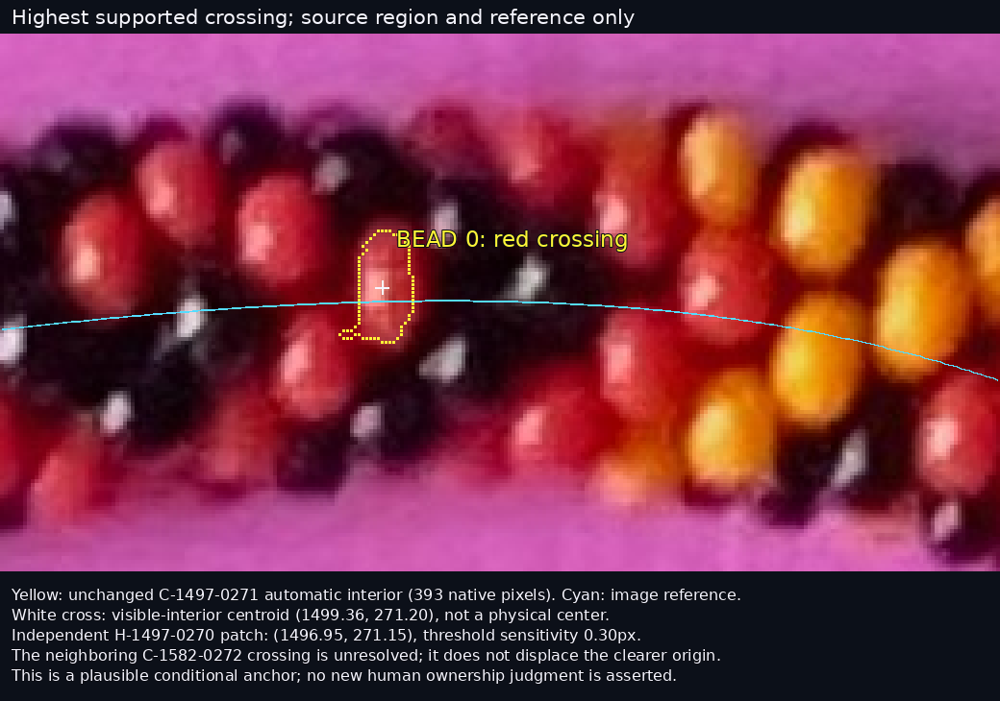
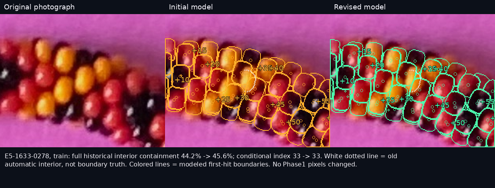
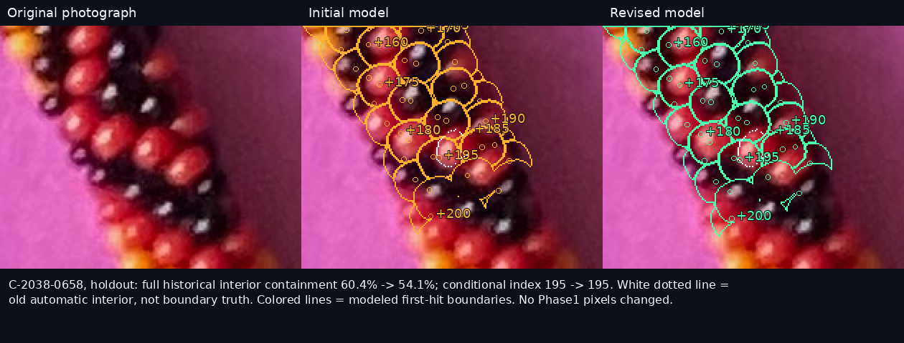
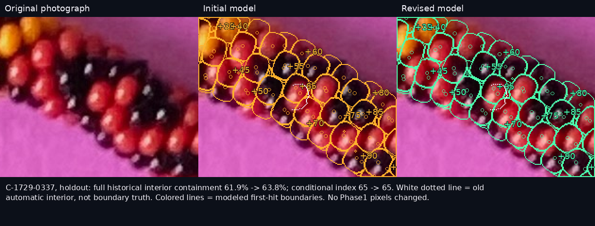
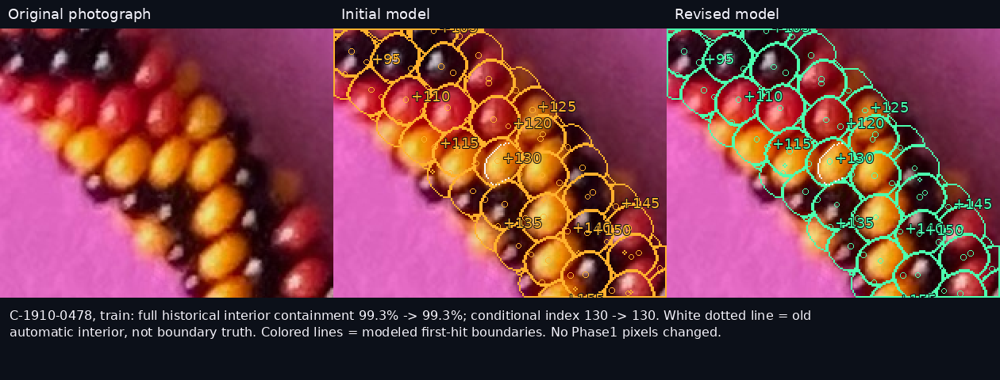
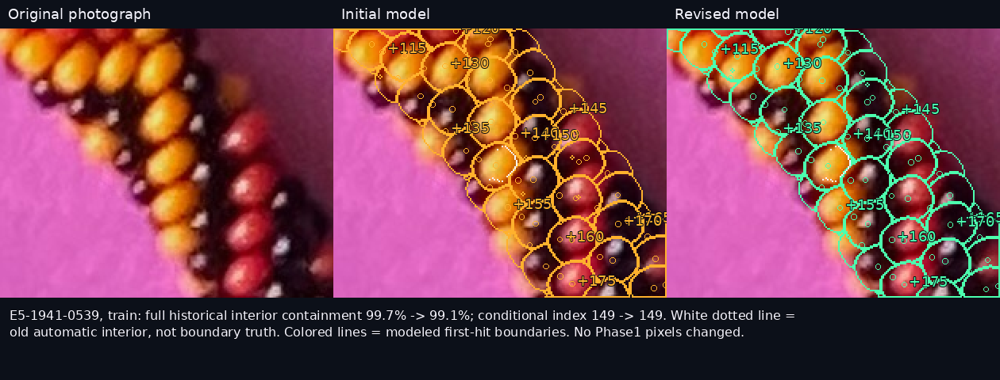
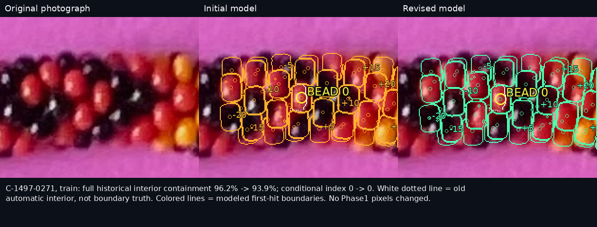
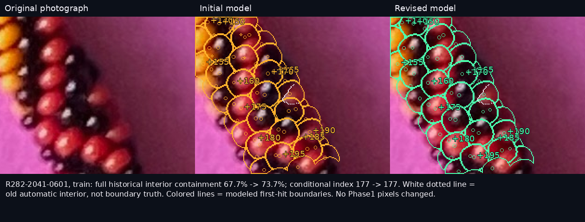
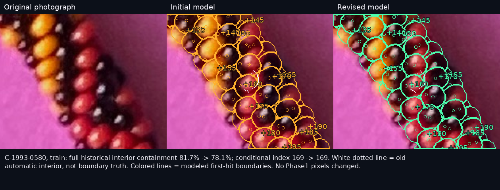
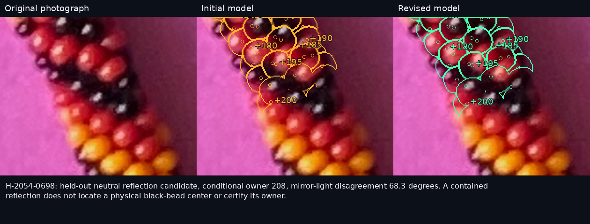

R294: bead 0 through a conditional −20…200 chain
Original photograph only. Initial and revised models preserve all Phase1 evidence. The certified revised fit preserves the initial hand. A higher-scoring alternative interpenetrates; physical bead indexing remains conditional. Click images for full native resolution.
Report · Reproduction · Revised positions CSV
Bead 0

Full bounded run, original / initial / revised
mismatch-01

E5-1633-0278, train: full historical interior containment 44.2% -> 45.6%; conditional index 33 -> 33. White dotted line = old automatic interior, not boundary truth. Colored lines = modeled first-hit boundaries. No Phase1 pixels changed.
Unmarked native cropmismatch-02

C-2038-0658, holdout: full historical interior containment 60.4% -> 54.1%; conditional index 195 -> 195. White dotted line = old automatic interior, not boundary truth. Colored lines = modeled first-hit boundaries. No Phase1 pixels changed.
Unmarked native cropmismatch-03

C-1729-0337, holdout: full historical interior containment 61.9% -> 63.8%; conditional index 65 -> 65. White dotted line = old automatic interior, not boundary truth. Colored lines = modeled first-hit boundaries. No Phase1 pixels changed.
Unmarked native cropmatched-01

C-1910-0478, train: full historical interior containment 99.3% -> 99.3%; conditional index 130 -> 130. White dotted line = old automatic interior, not boundary truth. Colored lines = modeled first-hit boundaries. No Phase1 pixels changed.
Unmarked native cropmatched-02

E5-1941-0539, train: full historical interior containment 99.7% -> 99.1%; conditional index 149 -> 149. White dotted line = old automatic interior, not boundary truth. Colored lines = modeled first-hit boundaries. No Phase1 pixels changed.
Unmarked native cropmatched-03

C-1497-0271, train: full historical interior containment 96.2% -> 93.9%; conditional index 0 -> 0. White dotted line = old automatic interior, not boundary truth. Colored lines = modeled first-hit boundaries. No Phase1 pixels changed.
Unmarked native cropimproved-01

R282-2041-0601, train: full historical interior containment 67.7% -> 73.7%; conditional index 177 -> 177. White dotted line = old automatic interior, not boundary truth. Colored lines = modeled first-hit boundaries. No Phase1 pixels changed.
Unmarked native cropregressed-01

C-1993-0580, train: full historical interior containment 81.7% -> 78.1%; conditional index 169 -> 169. White dotted line = old automatic interior, not boundary truth. Colored lines = modeled first-hit boundaries. No Phase1 pixels changed.
Unmarked native cropreflection-01

H-2054-0698: held-out neutral reflection candidate, conditional owner 208, mirror-light disagreement 68.3 degrees. A contained reflection does not locate a physical black-bead center or certify its owner.
Unmarked native crop